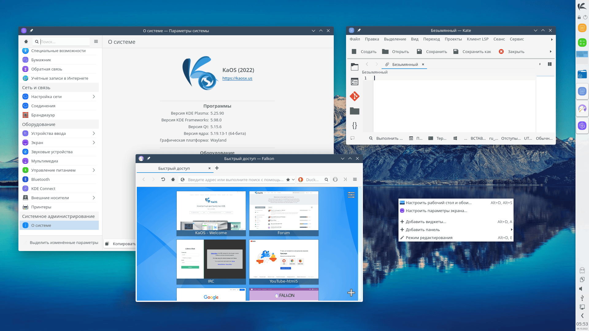

KaOS не основан на других дистрибутивах, он был создан с нуля. Нитакой как все для нитаких как все.
Техническая информация
Отзывы
Любитель линукса:
Лучший дистрибутив в мире
Любитель линукса:
Лучший дистрибутив в мире
Любитель линукса:
Лучший дистрибутив в мире
Любитель линукса:
Лучший дистрибутив в мире
Техническая информация
Основа: Arch Linux, но со своими репозиториями и системой обновления.
Рабочее окружение: KDE Plasma по умолчанию.
Особенности:
Rolling-release модель (постоянные обновления).
Ориентация на KDE Plasma и связанные компоненты.
Использование Pacman (менеджер пакетов Arch Linux).
Развитие ведется независимо от Arch Linux, со своими репозиториями и командами разработки.
Поддержка 64-битной архитектуры (x86-64).
Установленные приложения (по умолчанию):
KDE Plasma, KDE Frameworks, KDE Applications.
Офисный пакет Calligra (или LibreOffice, выбирается при установке).
Веб-браузер Falkon.
Медиаплеер SMPlayer.
Графический установщик Calamares.
Требования к оборудованию:
Процессор: 64-битный процессор (x86-64).
Оперативная память: 2 ГБ (рекомендуется 4 ГБ и более).
Место на диске: 20 ГБ (рекомендуется 30 ГБ и более).
Видеокарта: Любая видеокарта с поддержкой OpenGL (для KDE Plasma).
Доступ к интернету: Необходим для загрузки пакетов во время установки и обновлений.
Целевая аудитория:
Пользователи, любящие KDE Plasma и желающие иметь rolling-release дистрибутив.
Руководство по установке
1. Загрузка ISO-образа:
Купите у нас
2. Создание загрузочной флешки/диска:
Используйте программу Rufus, Etcher или dd для создания загрузочной флешки/диска.
3. Загрузка с флешки/диска:
Перезагрузите компьютер.
Во время загрузки нажмите клавишу, соответствующую выбору загрузочного устройства (обычно Del, F2, F12).
В BIOS/UEFI выберите загрузку с флешки/диска.
4. Начало установки:
Загрузится Live-среда KaOS с графическим установщиком Calamares.
Выберите язык установки.
Настройте раскладку клавиатуры.
5. Подключение к сети:
Подключитесь к сети Wi-Fi (если необходимо) в настройках Calamares.
Убедитесь, что есть доступ к интернету (например, откройте веб-браузер).
6. Разметка диска:
ВНИМАНИЕ! Этот шаг может привести к потере данных! Сделайте резервную копию важных файлов!
В Calamares выберите способ разметки диска:
При ручной разметке: создайте как минимум корневой раздел (`/`) и, рекомендуется, раздел swap.
7. Настройка системы:
Выберите часовой пояс.
Выберите раскладку клавиатуры.
Настройте имя хоста.
Создайте учетную запись пользователя (имя пользователя, пароль).
Выберите, устанавливать ли загрузчик (обычно GRUB) и куда его установить (обычно в MBR или UEFI раздел).
Выберите, хотите ли вы использовать проприетарные драйверы для видеокарты.
Выберите, какой офисный пакет вы хотите установить (Calligra или LibreOffice).
8. Установка:
Нажмите кнопку "Install" ("Установить").
Дождитесь завершения установки.
9. Перезагрузка:
После завершения установки перезагрузите компьютер.
Извлеките установочный носитель.
Система KaOS загрузится.
10. После установки:
Обновите систему: `sudo pacman -Syu` (в терминале).
Установите необходимые драйверы и приложения (через Pacman или графический интерфейс).
Настройте KDE Plasma под свои нужды.